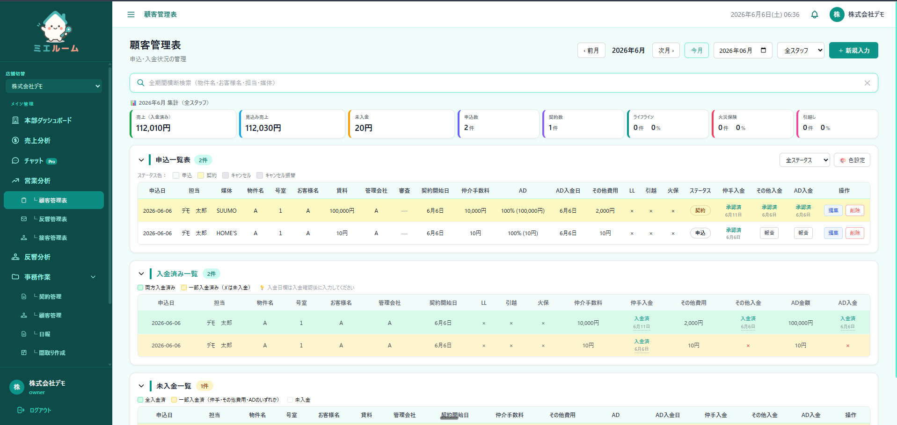

「反響は取れているのに、なぜか利益が残らない」「申込や入金の状況が、店舗ごとにバラバラで把握できない」。──賃貸仲介の現場では、こうした悩みの多くが業務管理のしくみ不足から生まれています。本記事では、賃貸仲介の業務改善ツールを検討している方に向けて、Excelの申込管理表が抱える限界から、店舗向けツールに必要な機能、選び方までを現場目線で解説します。
賃貸仲介の業務は、なぜ「バラバラ」になるのか
賃貸仲介の一日は、反響対応・来店接客・申込・契約書類・入金確認・広告費の管理まで、驚くほど幅広い業務でできています。それぞれをExcel、メール、LINE、紙、店舗ごとの独自ルールで回しているうちに、情報が少しずつ分断されていきます。
問題は「どこかが壊れている」ことではなく、全体がつながっていないことです。反響の数字と売上の数字が別々の場所にあり、申込と入金が別の表で管理されている。だから「本当に儲かっているのか」を、誰も即答できない。これが、賃貸仲介にツールが必要になる根本の理由です。
賃貸仲介の申込管理表、Excelだと何が限界なのか
賃貸仲介の申込管理表は、業務の心臓部です。しかしExcelで運用していると、店舗が増え、案件が増えるほど、次のような壁にぶつかります。
- 複数人で同時に編集すると、上書き事故や「最新がどれか分からない」問題が起きる
- 後AD（後から入る広告料）や一部入金の管理が、関数と手作業では追いきれない
- 店舗ごとにフォーマットが微妙に違い、全社で横断集計できない
- 担当者の記憶頼みになり、退職・異動とともに情報が消える
とくに賃貸仲介ならではの「契約しても、入金が終わるまで売上は確定しない」という性質は、Excelがいちばん苦手とするところです。専用ツールなら、確定売上と見込みを分け、未入金だけを自動で抽出できます。

「入金済みフォルダ」に入れた時点で安心してしまい、実は一部しか入っていなかった——。残額の督促タイミングを逃し、回収しそびれるパターンです。申込管理表は「入っているか／いないか」ではなく「いくら残っているか」で見る必要があります。
店舗向けツールに欠かせない5つの機能
賃貸仲介の店舗向けツールを選ぶなら、最低限おさえておきたい機能があります。多機能であればよいわけではなく、「現場が毎日さわる業務」をカバーしているかが重要です。
| 機能 | 解決する課題 |
|---|---|
| 申込・入金管理 | 後AD・一部入金・未入金を可視化し、計上漏れと回収漏れを防ぐ |
| 反響分析 | 媒体別の反響〜成約〜費用対効果を紐づけ、広告費の配分を根拠で決める |
| 成績の可視化 | スタッフ別の反響数・接客数・成約率を集計し、評価と育成に活かす |
| 接客管理 | 来店から接客・申込までの状況を一覧化し、対応漏れをなくす |
| 契約書類の自動化 | 自社フォーマットに顧客情報を差し込み、書類作成の時間を減らす |
これらがひとつの画面でつながっていることに意味があります。反響の数字と売上の数字、申込と入金が同じ場所にあれば、「本当の売上」と「本当の費用対効果」がはじめて見えてきます。

不動産仲介の業務改善ツール、選び方の5チェック
不動産仲介の業務改善ツールは数多くありますが、賃貸仲介の現場にフィットするかは別問題です。導入して後悔しないために、次の5点を確認してください。
- 賃貸仲介の商習慣に合っているか。後AD・一部入金・仲手など、賃貸ならではのお金の流れを前提に設計されているか。
- 現場が使い続けられるシンプルさか。多機能でも、入力が面倒なら定着しません。毎日さわる画面ほど軽いか。
- 店舗を横断して集計できるか。1店舗でも複数店舗でも、全社の数字をひとつで見られるか。
- スマホでも確認できるか。店外・移動中でも、数字と進捗をサッと見られるか。
- 導入と運用のサポートがあるか。入れて終わりではなく、使いこなすまで伴走してくれるか。
「多機能かどうか」より、「賃貸仲介の現場に合っているか」で選ぶ。
導入で変わること（ビフォー・アフター）
業務改善ツールを入れると、数字を"集める"作業から、数字を"使う"仕事へと重心が移ります。
ビフォー：月末に各店舗からExcelを集め、コピペで集計。反響と売上は別管理で、費用対効果は勘。
アフター：入力した瞬間に全社の数字が更新され、未入金も未返信も自動で見える。会議の時間が「集計報告」から「次の一手の相談」に変わる。
ミエルームは、賃貸仲介の現場が自ら「あったら良かった」を形にした業務管理ツールです。反響・接客・売上・申込・契約書類・反響分析を、ひとつの画面にまとめています。
まとめ：数字が「見える」だけで、経営は変わる
賃貸仲介の業務改善は、特別なことではありません。バラバラだった数字をひとつにまとめ、「本当の売上」と「本当の費用対効果」を見える化する。それだけで、広告費の配分も、スタッフの評価も、来月の打ち手も、根拠を持って決められるようになります。まずは自店舗の未入金が今いくらあるか、一覧で出せるかを確認してみてください。